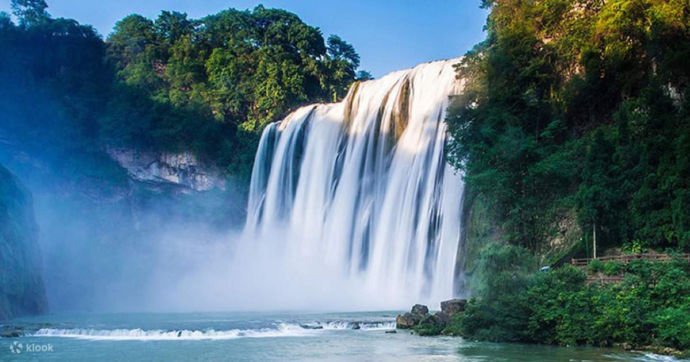
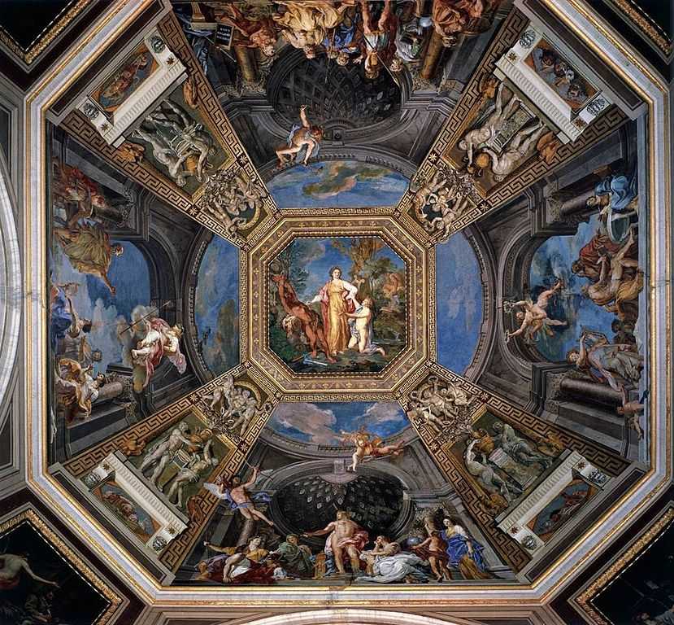
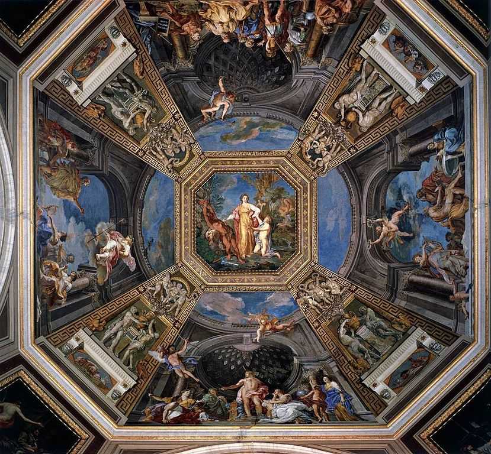

Chiang Mai, Thailand
Chiang Mai, nestled in the lush hills of northern Thailand, is a city that captivates with its unique blend of cultural richness and natural beauty. Situated approximately 700 kilometers north of Bangkok, Chiang Mai is the largest city in the region and serves as the capital of the province of the same name. Its geographical location is nothing short of enchanting, surrounded by forested mountains and picturesque landscapes. This charming city, often referred to as the "Rose of the North," offers visitors a delightful escape from the bustling urban life, inviting them to explore a realm where tradition meets modernity amidst a backdrop of stunning scenery.
The heart of Chiang Mai beats with a rich history that dates back over 700 years. Founded in 1296, the city was originally the capital of the ancient Lanna Kingdom. Today, remnants of its storied past are scattered throughout the city, from the ancient temples that dot the landscape to the preserved city walls and moats that harken back to a bygone era. Among the city's treasures is the revered Wat Phra Singh, a 14th-century temple known for its intricate architecture and revered Buddha image. Chiang Mai's historical sites provide a captivating glimpse into its heritage, making it a destination that seamlessly weaves together the past and present for visitors to explore and appreciate.
Photo Gallery


Guanajuato, Mexico

As the sun dips low in the sky, Guanajuato, the vibrant small town in Mexico, unfolds a spectacular tableau of hues and shadows that bewitch every onlooker. The historic town, celebrated as the backdrop for the acclaimed animation "Coco," transforms into a realm of dreams. Its vividly painted houses, basking in the warm golden glow of the evening sun, offer a picturesque sight that resonates deeply with the joyous and spirited theme of the beloved movie.
Guanajuato at twilight is a painting that comes to life, a perfect blend of reality and the fantastic world depicted in "Coco." The array of colors presented by the quaint houses form a harmonious canvas that radiates a tranquil yet vibrant energy as the day transitions to night. This little town, full of life and color, offers a surreal experience, inviting dreamers and artists alike to immerse themselves in its poetic scenery, alive with stories and rich cultural tapestry.
Photo Gallery


Vatican

Vatican City, a city-state surrounded by Rome, Italy, is the spiritual and administrative focal point of the Roman Catholic Church. Home to architectural and artistic marvels, it carries a history rich with spirituality and exquisite artistry. Visitors can start their journey at the St. Peter's Square, which stands as a testament to masterful architecture and the deep-rooted history of the church.
The Vatican boasts an array of stunning sites that captivate the eye and nourish the soul. From the iconic spiral staircase in the Vatican Museums to the breath-taking paintings in the Athenian academy, the heritage it harbors is indeed immense. Even a glimpse of the city from the waterfront offers a panoramic that encapsulates the spirit and grandeur of Vatican City, presenting an ethereal view that evokes a sense of tranquility and reverence.
Photo Gallery
 
